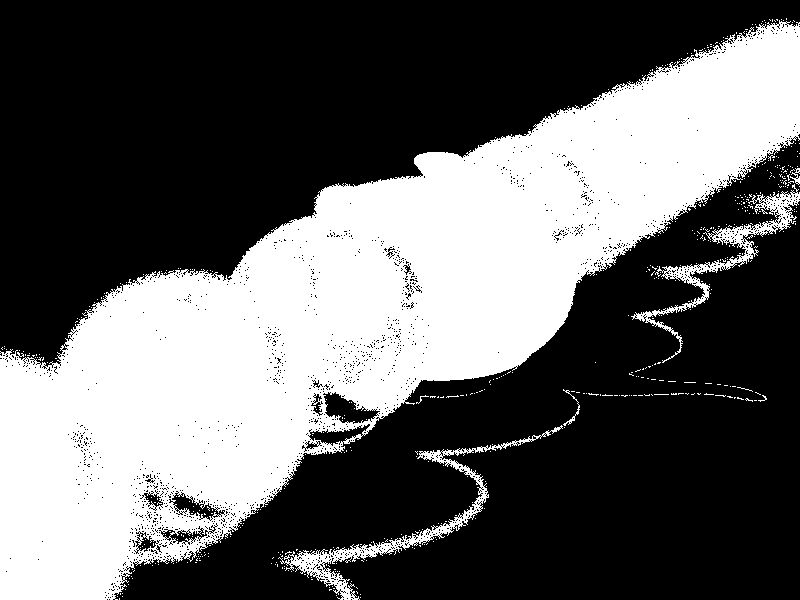
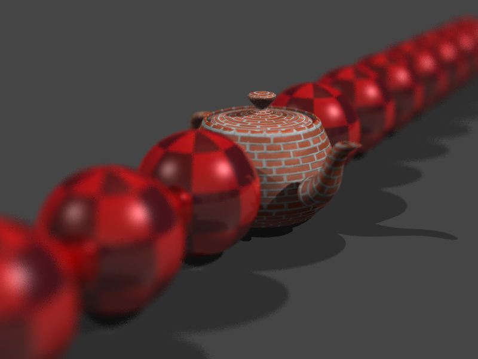
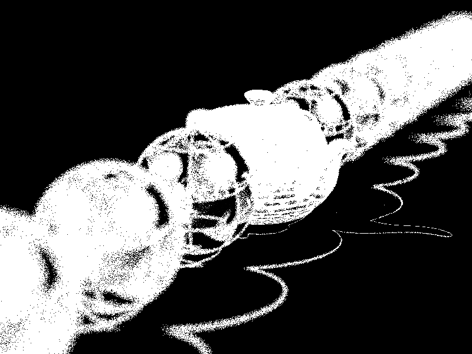
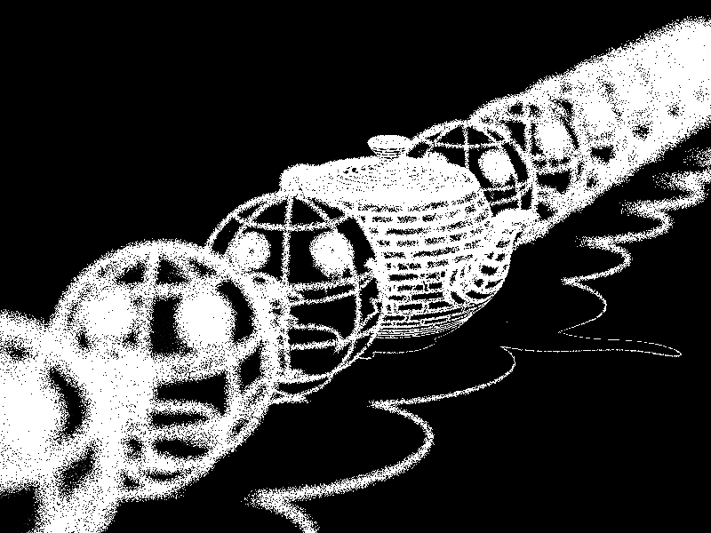
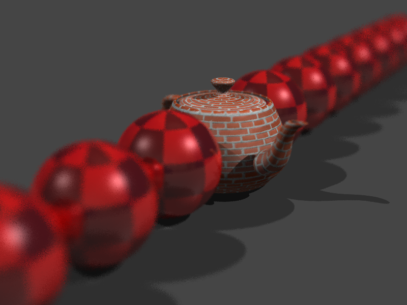
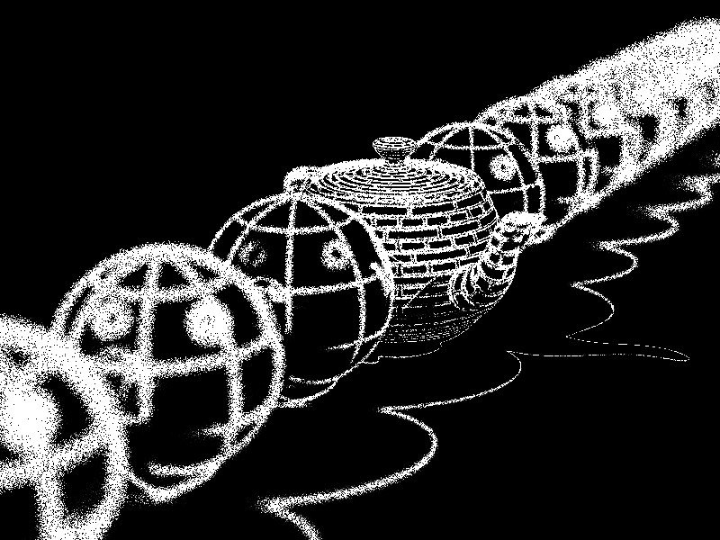
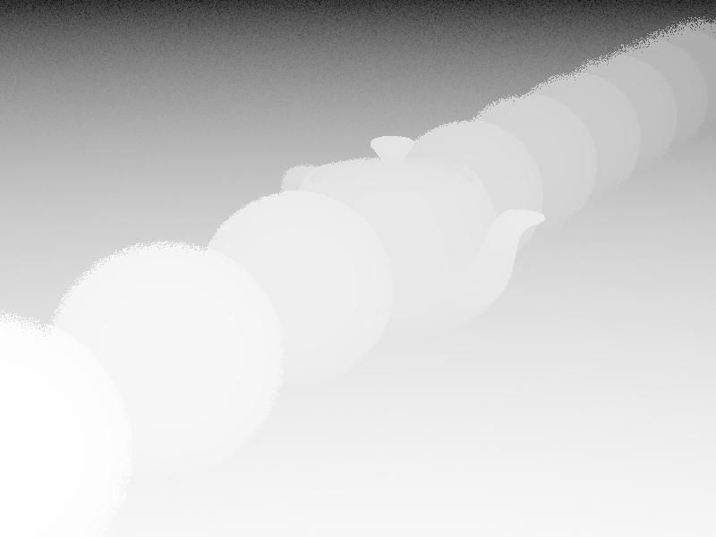

Project 9 - Depth of Field
Halton sampling - 32 samples
Halton sampling - 64 samples
Halton sampling - 128 samples
Adaptive sampling - min 4, max 64 samples, threshold 0.000001
Sample Count Image

Adaptive sampling - min 4, max 64 samples, threshold 0.00001

Sample Count Image

Adaptive sampling - min 4, max 64 samples, threshold 0.0001
Sample Count Image

Adaptive sampling - min 4, max 64 samples, threshold 0.001

Sample Count Image

Zbuffer

Hardware Configuration
Processor : Intel(R) Core(TM) i5-5200U CPU @ 2.29GHz x 4
Graphics : Intel(R) HD Graphics 5500 (Broadwell GT2)
OS : Ubuntu 18.04.3 LTS
OS type : 64-bit
RAM : 4GB